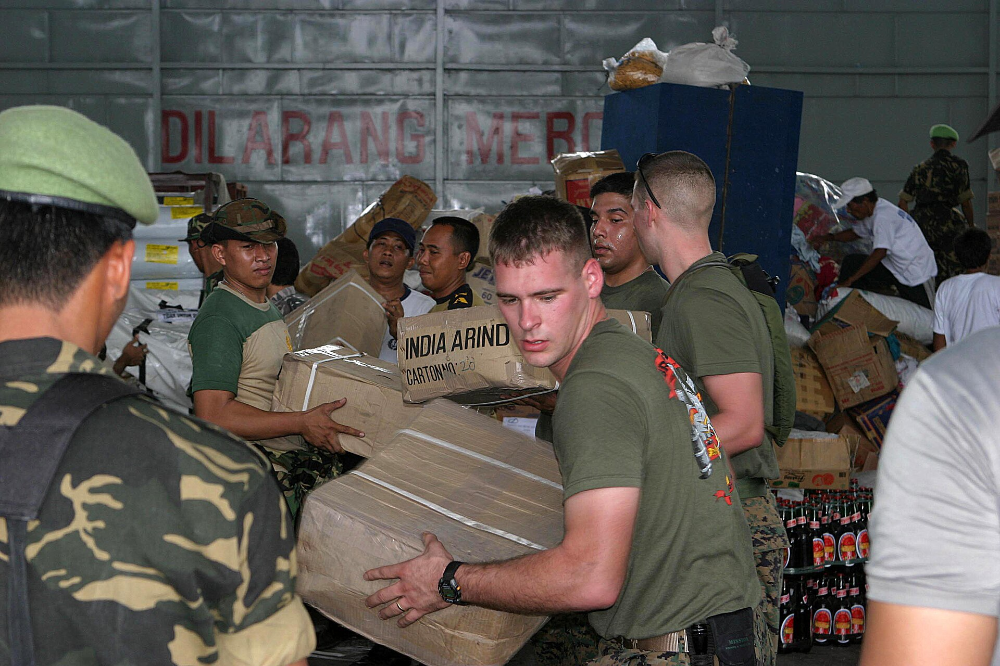
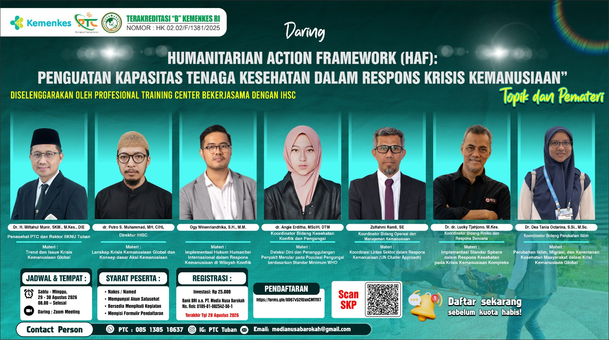
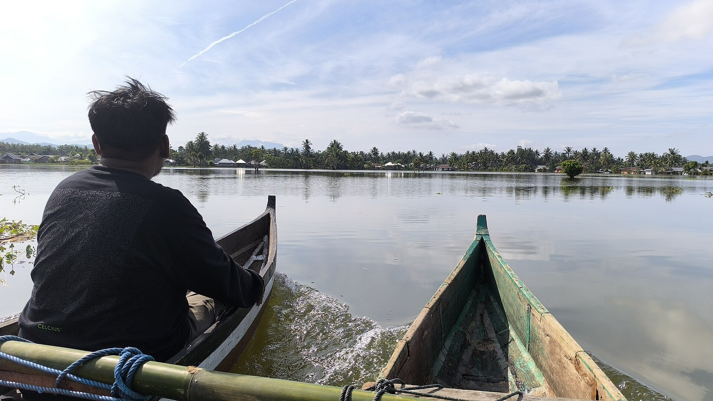

World Humanitarian Day: Why Humanitarian Action Needs Science and Data
Hari Kemanusiaan Sedunia: Mengapa Aksi Kemanusiaan Membutuhkan Sains dan Data
On 19 August, the world marks World Humanitarian Day. IHSC reflects on why effective humanitarian action must be built on evidence, training, and coordination.
Pada 19 Agustus, dunia memperingati Hari Kemanusiaan Sedunia. IHSC merenungkan mengapa aksi kemanusiaan yang efektif harus bertumpu pada bukti, pelatihan, dan koordinasi.
ReadBaca
Humanitarian Action Framework (HAF): Strengthening Health Workers' Capacity
Humanitarian Action Framework (HAF): Penguatan Kapasitas Tenaga Kesehatan
PTC and IHSC hold a two-day online training on humanitarian crisis response for health workers, 29–30 August 2026.
PTC dan IHSC menyelenggarakan pelatihan daring dua hari respons krisis kemanusiaan bagi tenaga kesehatan, 29–30 Agustus 2026.
ReadBaca
Indonesia's Humanitarian Landscape: Data You Need to Know
Lanskap Kemanusiaan Indonesia: Data yang Perlu Anda Ketahui
Floods, displacement, and generosity — the data behind Indonesia's humanitarian landscape, and where IHSC stands.
Banjir, pengungsian, dan kedermawanan — data di balik lanskap kemanusiaan Indonesia, dan posisi IHSC.
ReadBacaThe Inaugural Plenary: IHSC Begins Its Work
Pleno Perdana: IHSC Memulai Kerjanya
Read the full account of IHSC's first plenary session held on 5 June 2026.
Laporan lengkap pleno perdana IHSC pada 5 Juni 2026.
ReadBacaPriority Study: Community-Based Preparedness and First Aid
Kajian Prioritas: Kesiapsiagaan dan Pertolongan Pertama Berbasis Masyarakat
Initial mapping of IHSC's research program on community resilience.
Peta awal program riset IHSC tentang resiliensi komunitas.
ReadBacaIHSC Launch Plan: Toward an Open Humanitarian Research Space
Rencana Peluncuran IHSC: Menuju Ruang Kajian Kemanusiaan yang Terbuka
Outline of the publication, training, and network agenda following the inaugural plenary.
Garis besar agenda publikasi, pelatihan, dan jejaring pasca-pleno perdana.
ReadBacaPreparedness Policy: A Gap the Academic World Can Fill
Kebijakan Kesiapsiagaan: Celah yang Bisa Diisi Dunia Akademik
How IHSC research can inform national preparedness policy.
Bagaimana riset IHSC dapat memberi masukan bagi kebijakan kesiapsiagaan nasional.
ReadBacaHumanitarian Literacy: What Every Citizen Should Understand
Literasi Kemanusiaan: yang Sebaiknya Dipahami Warga
A public education series on the fundamentals of humanitarianism.
Serial edukasi publik tentang dasar-dasar kemanusiaan.
ReadBacaPartner Map: Humanitarian Organizations to Collaborate With
Peta Mitra: Organisasi Kemanusiaan yang Bisa Diajak Berkolaborasi
A mapping of potential partnerships.
Pemetaan kemitraan potensial.
ReadBacaDisaster Response: Lessons from Indonesian Communities
Respons Bencana: Pelajaran dari Komunitas Indonesia
What decades of community-based response teach us about preparedness.
yang dapat dipelajari dari respons berbasis komunitas selama puluhan tahun.
ReadBacaIntegrating Islamic Perspectives into the Global Humanitarian System
Mengintegrasikan Perspektif Keislaman dalam Sistem Kemanusiaan Global
How Islamic principles enrich international humanitarian norms.
Bagaimana prinsip keislaman memperkaya norma kemanusiaan internasional.
ReadBacaClimate Change and Human Health: A Research Agenda
Perubahan Iklim dan Kesehatan Manusia: Agenda Riset
The IHSC Climate Change field outlines its research priorities.
Bidang Perubahan Iklim IHSC memaparkan prioritas risetnya.
ReadBaca